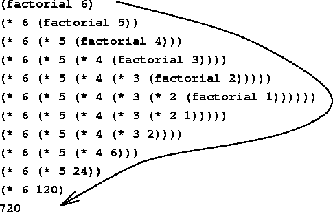

递归
基本思想
递归是一种直接或者间接调用自身函数或者方法的算法。递归的实质是把问题分解成规模缩小的同类问题的子问题，然后递归调用方法来表示问题的解。递归算法，其实就是程序的自身调用。在一段程序中往往会遇到调用自身的那样一种coding策略。递归往往能带来非常简洁非常直观的代码形式，从而使我们的编码大大简化，但是递归的思想确实和我们的常规思维相逆。我们通常是从上而下的思考问题，而递归是从下往上进行思考。这样我们就能看到我们会用很少的语句解决很大的问题，所以递归策略最主要的体现就是较少的代码量解决复杂的问题。
Example：计算阶乘
计算阶乘是递归程序的经典示例。计算某个数的阶乘就是用那个数乘以包含1在内的比它小的所有数。例如，factorial(6)等价于6*5*4*3*2*1,阶乘的特性是，某个数的阶乘等于起始数乘以比它小的数的阶乘。阶乘函数：
int factorial(int n) {
return n * factorial(n-1);
}
但是这个函数会永远执行下去，因为它没有终止条件。所以我们需要一个条件告诉它何时停止。我们这里给出的条件就是n == 1停止
int factorial(int n){
if(n == 1){
return 1;
}
else {
return n * factorial(n - 1);
}
}
流程示意图：

Example：斐波纳契数列
数学上斐波纳契数列是以递归的方式来定义的：

写成递归程序：
int Fibonacci(int n){
if (n <= 1)
return n;
else
return Fibonacci(n-1) + Fibonacci(n-2);
}
递归条件
- 递归开始时需要一个种子值
- 不断的调用自身
- 检查当前值是否已经匹配基本条件。如果匹配，则进行处理并返回值